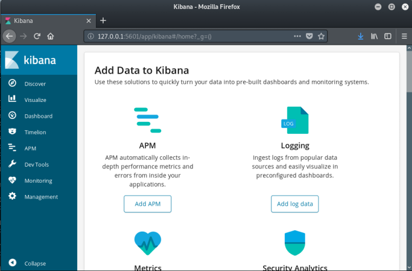

# Port 5601 - Kibana
Kibana is part of the ELK stack (refer to the 9200/elasticsearch node for more info).
Kibana (usually) runs LOCALLY on port 5601 -
https://www.elastic.co/guide/en/kibana/current/settings.html## Port Forward Kibana out to You
If you have ssh access, you could port-forward the kibana web app out to your attacking machine so that you can browse it locally
root@gotham:~/ctf/haystack# ssh security@10.10.10.115 -L 5601:127.0.0.1:5601 -nNT
security@10.10.10.115's password: spanish.is.key
...
ssh should hang.
You can now browse to the kibana web app on your attacking machine by visiting
http://127.0.0.1:5601